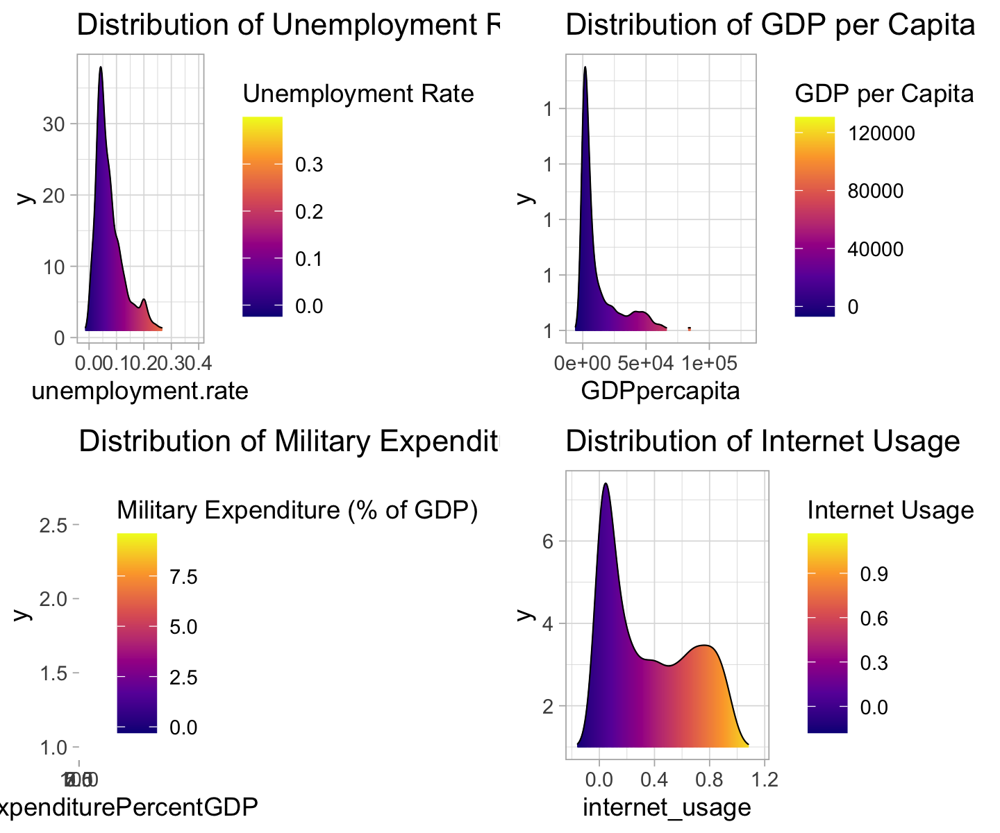

data_question1 <- read.csv(here("scripts","data","data_question1.csv"))
data_question24 <- read.csv(here("scripts", "data", "data_question24.csv"))
data_question2 <- read.csv(here("scripts", "data", "data_question24.csv"))
data_question3_1 <- read.csv(here("scripts", "data", "data_question3_1.csv"))
data_question3_2 <- read.csv(here("scripts", "data", "data_question3_2.csv"))
data_question3_3 <- read.csv(here("scripts", "data", "data_question3_3.csv"))
Q3.1 <- read.csv(here("scripts", "data", "data_question3_1.csv"))
Q3.2 <- read.csv(here("scripts", "data", "data_question3_2.csv"))
Q3.3 <- read.csv(here("scripts", "data", "data_question3_3.csv"))
data <- read.csv(here("scripts", "data", "all_Merge.csv"))
Correlation_overall <- data_question1 %>%
select(population:ef_regulation)
#### boxplots ####
#for goals
#dev.off()
# boxplot(Correlation_overall[2:18],
# las = 2, # Makes the axis labels perpendicular to the axis
# par(mar = c(5, 4, 4, 2) + 0.1), # Adjusts the margins to fit all labels
# cex.axis = 0.7, # Reduces the size of the axis labels
# cex.lab = 1, # Reduces the size of the x and y labels
# notch = TRUE, # Specifies whether to add notches or not
# main = "Merged goals boxplot", # Title of the boxplot
# xlab = "Goals", # X-axis label
# ylab = "Score") # Y-axis label
#boxplot per continent
data_Q1_Africa <- data_question1 %>%
filter(data_question1$continent == 'Africa')
data_Q1_Europe <- data_question1 %>%
filter(data_question1$continent == 'Europe')
data_Q1_Asia <- data_question1 %>%
filter(data_question1$continent == 'Asia')
data_Q1_Americas <- data_question1 %>%
filter(data_question1$continent == 'Americas')
data_Q1_Oceania <- data_question1 %>%
filter(data_question1$continent == 'Oceania')
#Africa
data_Q1_Africa_long <- melt(data_Q1_Africa[,8:24])
medians_AF <- data_Q1_Africa_long %>%
group_by(variable) %>%
summarize(median_value = median(value))
medians_AF$color <- ifelse(medians_AF$median_value > 75, "lightblue",
ifelse(medians_AF$median_value < 25, "red", 'orange'))
data_Q1_Africa_long <- data_Q1_Africa_long %>%
left_join(medians_AF, by = "variable")
bandwidth_nrd_AF <- bw.nrd(data_Q1_Africa_long$value)
ggplot(data_Q1_Africa_long, aes(x = variable, y = value, fill = color)) +
geom_violin(trim = FALSE, bw = bandwidth_nrd_AF) +
scale_fill_identity() +
labs(title = "Africa SDG goals boxplot", x = "Goals", y = "Score") +
geom_boxplot(width = 0.1, outlier.size = 1, fill = 'white') +
scale_y_continuous(labels = scales::label_number()) +
theme_classic() +
theme(axis.text.x = element_text(angle = 90, vjust = 0.5, hjust = 1))
#Europe
data_Q1_Europe_long <- melt(data_Q1_Europe[,8:24])
medians_EU <- data_Q1_Europe_long %>%
group_by(variable) %>%
summarize(median_value = median(value))
medians_EU$color <- ifelse(medians_EU$median_value > 75, "lightblue",
ifelse(medians_EU$median_value < 25, "red", 'orange'))
data_Q1_Europe_long <- data_Q1_Europe_long %>%
left_join(medians_EU, by = "variable")
bandwidth_nrd_EU <- bw.nrd(data_Q1_Europe_long$value)
ggplot(data_Q1_Europe_long, aes(x = variable, y = value, fill = color)) +
geom_violin(trim = FALSE, bw = bandwidth_nrd_EU) +
scale_fill_identity() +
labs(title = "European SDG goals boxplot", x = "Goals", y = "Score") +
geom_boxplot(width = 0.1, outlier.size = 1, fill = 'white') +
scale_y_continuous(labels = scales::label_number()) +
theme_classic() +
theme(axis.text.x = element_text(angle = 90, vjust = 0.5, hjust = 1))
#Asia
data_Q1_Asia_long <- melt(data_Q1_Asia[,8:24])
medians_AS <- data_Q1_Asia_long %>%
group_by(variable) %>%
summarize(median_value = median(value))
medians_AS$color <- ifelse(medians_AS$median_value > 75, "lightblue",
ifelse(medians_AS$median_value < 25, "red", 'orange'))
data_Q1_Asia_long <- data_Q1_Asia_long %>%
left_join(medians_AS, by = "variable")
bandwidth_nrd_AS <- bw.nrd(data_Q1_Asia_long$value)
ggplot(data_Q1_Asia_long, aes(x = variable, y = value, fill = color)) +
geom_violin(trim = FALSE, bw = bandwidth_nrd_AS) +
scale_fill_identity() +
labs(title = "Asian SDG goals boxplot", x = "Goals", y = "Score") +
geom_boxplot(width = 0.1, outlier.size = 1, fill = 'white') +
scale_y_continuous(labels = scales::label_number()) +
theme_classic() +
theme(axis.text.x = element_text(angle = 90, vjust = 0.5, hjust = 1))
#Americas
data_Q1_Americas_long <- melt(data_Q1_Americas[,8:24])
medians_AM <- data_Q1_Americas_long %>%
group_by(variable) %>%
summarize(median_value = median(value))
medians_AM$color <- ifelse(medians_AM$median_value > 75, "lightblue",
ifelse(medians_AM$median_value < 25, "red", 'orange'))
data_Q1_Americas_long <- data_Q1_Americas_long %>%
left_join(medians_AM, by = "variable")
bandwidth_nrd_AM <- bw.nrd(data_Q1_Americas_long$value)
ggplot(data_Q1_Americas_long, aes(x = variable, y = value, fill = color)) +
geom_violin(trim = FALSE, bw = bandwidth_nrd_AM) +
scale_fill_identity() +
labs(title = "American SDG goals boxplot", x = "Goals", y = "Score") +
geom_boxplot(width = 0.1, outlier.size = 1, fill = 'white') +
scale_y_continuous(labels = scales::label_number()) +
theme_classic() +
theme(axis.text.x = element_text(angle = 90, vjust = 0.5, hjust = 1))
#Oceania
data_Q1_Oceania_long <- melt(data_Q1_Oceania[,8:24])
medians_OC <- data_Q1_Oceania_long %>%
group_by(variable) %>%
summarize(median_value = median(value))
medians_OC$color <- ifelse(medians_OC$median_value > 75, "lightblue",
ifelse(medians_OC$median_value < 25, "red", 'orange'))
data_Q1_Oceania_long <- data_Q1_Oceania_long %>%
left_join(medians_OC, by = "variable")
bandwidth_nrd_OC <- bw.nrd(data_Q1_Oceania_long$value)
ggplot(data_Q1_Oceania_long, aes(x = variable, y = value, fill = color)) +
geom_violin(trim = FALSE, bw = bandwidth_nrd_OC) +
scale_fill_identity() +
labs(title = "Oceanian SDG goals boxplot", x = "Goals", y = "Score") +
geom_boxplot(width = 0.1, outlier.size = 1, fill = 'white') +
scale_y_continuous(labels = scales::label_number()) +
theme_classic() +
theme(axis.text.x = element_text(angle = 90, vjust = 0.5, hjust = 1))
# Correlation_goals <- melt(Correlation_overall[,2:18])
# ggplot(Correlation_goals, aes(x= variable, y= value)) +
# geom_violin(trim=FALSE, fill="orange") +
# labs(title="Merged goals violin boxplot",x="Goals", y = "Distribution") +
# geom_boxplot(width=0.1, outlier.size = 1) +
# scale_y_continuous(labels = scales::label_number()) + #limits = c(0, 100)
# theme_classic() +
# theme(axis.text.x = element_text(angle = 90, vjust = 0.5, hjust=1))
#### WHY GOING BELOW 0 TO > 100 ?? SCORES ONLY FROM 0 TO 100

